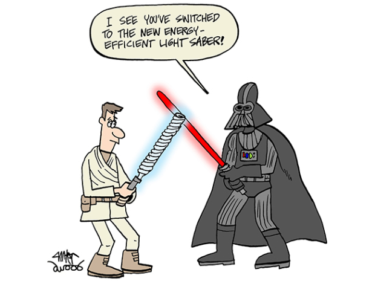

"Application of model checking in Biology"
I work On Model Checking !

Presentation :
- Courses
- Literature survey
- Projects work, Current State and Future work
- References
Projects...
- In collabaoration with Mukund Thattai @ncbs
♥ Cell evolution as Binary circuit.
♥ Biology Coloring problem in cell.
♥ Vesicular traffic Model.
Cell evolution ...
** Care about how many differnt compartments.
- Model cell evolution as a transition function.
Update and delete table.
- - Think Them as two dimensional table.
- - Possibility at each place is 0/1
- Constraints on them
- - Exactly one possibility for update table
- - At least one possibility for delete table
- - Allow only subsets to have 1's for delete table
Questions ?
"Is there an update' delete configuration and initial
state configuration which doesn't converge to a
equilibrium state before N iterations,for some N"
"What is the minimum number of steps required for
every possible update/delete table configuration
guaranteed to converge to an equilibrium state?"
Biology Coloring problem in cell
** Steady state condition
- Given a topology represent Node as compartments and allow vesicle which are subset to flow
from each compartment with each edge having some kind of mask.
- Specify inclusion and exclusion set for each mask.
- Implement Logic of Mask
Come up with model that minimise masks.
Current Project & future work
Vesicular traffic Model.
Nodes are compartment that contains molecules M
Total N nodes. 0/1 means whether molecule is presnt or not.
- Edges represent vesicles that are going out to fuse to another compartment.
- Edge should respect fusion rules.*
// A Assumption
Cell has to be in steady State
* :Not always the case but interesting enough.
Fusion Rules ...
- In order to fusion to occur V-Snares present at edge
should find the corresponding T-Snares at the target node.
- Driven by Friend/Inhibition- Matrix v * t matrix
Represnts which t snares are required in order to fusion to happen.
-
At least one tsnares required for the fusion should be in active based on onOff Matrix :
which states which t snares are in active phase at any node.
- At least one vsnare should pass all constraints and allow fusion to occur. Multiple can.
-
Other constraine is that the tsnares that are required for fusion have not to be present at edge.
Else that vsnare will not be considered for a candidate for the fusion.
- For source compartment also, those t snares have to be absent or present but are surely off (a 0 Onoff matrix).
That's all folks !
Questions ?